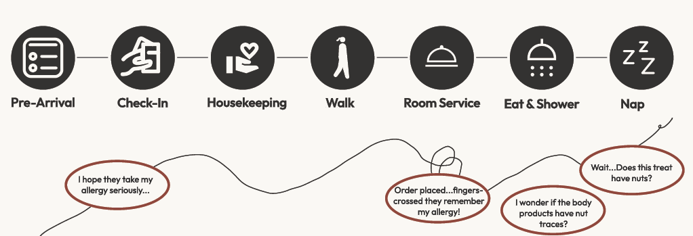
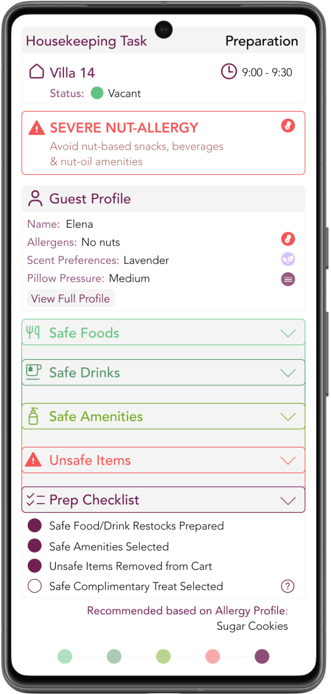

What Elena's stay looks like when the service can kill her.
Elena is a wellness-oriented traveler. She comes to Six Senses for the things the brand is built around: quiet, restoration, a stay that anticipates her without asking. She has filled out the pre-arrival form, confirmed her preferences at check-in, and woken up the next morning in her villa ready for the kind of slow day the resort exists to offer her. She wakes early and requests a housekeeping service through her mobile dashboard before stepping out for a walk. While she's away, the staff refresh her villa, restock the amenities, and leave a small complimentary treat on her bedside table.
She returns, orders breakfast through the in-villa phone, eats, showers using the wellness amenities, and settles in for a mid-morning siesta — not forgetting to savor the treat that housekeeping left for her.
Read her morning again with that in mind. The complimentary treat left on her bedside table. The body lotion in the bathroom. The breakfast tray that might be delivered alongside another guest's dish. Each touchpoint that the resort designed as a gesture of care is, from the inside of Elena's body, a question she has to ask herself.

I spoke with five people who navigate hotel stays with severe food allergies. The pattern was consistent and exhausting: the pre-arrival form gets filled out, the allergy gets repeated at check-in, the server gets reminded at dinner, the amenities get questioned silently, and the complimentary chocolates get inspected before they get eaten — or get left on the nightstand untouched. Vigilance that doesn't turn off.
External research filled in what those conversations suggested. A study of chefs in resort hotels found that allergen knowledge varies widely across kitchen staff and rarely follows formal training structures (Eren et al., 2021). A more recent study of personal care products in hotels across three continents found that contact allergens — including nut oils — appear regularly in shampoos, lotions, and conditioners, often without clear labeling (Viltakis & Kirchhof, 2025).
Hospitality staff are inconsistently equipped to manage allergens, and allergens reach guests through paths that nobody — not the kitchen, not the front desk, not housekeeping — is currently asked to watch as a system.
Most existing allergen-management tools in hospitality are built for the kitchen. Order tickets flag ingredients. Kitchen display systems warn about cross-contamination. Chefs are trained (to varying degrees) on safe preparation.
This makes sense if you believe allergies are a food problem.
But the complimentary treat that housekeeping left on Elena's bedside table came from a different supply chain than the kitchen. The body lotion in her bathroom was selected by amenities procurement. The breakfast tray was carried by a runner who never saw the order ticket.
Across Elena's morning, allergens reached her — or could have — through at least four separate operational paths, only one of which the kitchen controls.
The information already exists. Elena typed her allergy into the pre-arrival form weeks before she packed. The front desk confirmed it at check-in. By the time housekeeping stocked her villa, the fact of her allergy had been sitting in a database for days — and still didn't reach the person placing chocolates on her pillow. The information traveled everywhere except the last few feet.
The obvious place to intervene was the kitchen, or room service — the touchpoints where food is most clearly food. They were tempting precisely because the risk there is legible. Everyone already knows the kitchen is where allergies matter.
Housekeeping is the team guests never think about, and the system rarely accounts for. They don't handle the meal, so they're easy to leave out of an allergy conversation. But they stock the mini-bar, restock the amenities, select the body products, and leave the complimentary treat on the pillow — every food-adjacent item in the villa that isn't technically a meal.
In fact, they touch more of Elena's allergen exposure than the kitchen does, and they're the team least likely to be told about it.
Designing for the obvious stakeholder would have produced a better version of a system that already exists. Designing for housekeeping meant designing for the gap — the place where care is quietly given or quietly broken, and where nobody was looking.
The result is a single screen housekeeping interacts with before entering a villa — a preparation view that assembles itself around one guest and walks the housekeeper through getting the villa ready safely.

The order isn't arbitrary. The allergy alert sits at the top, in red, so the most important fact about this guest is the first thing seen and the hardest to miss — no remembering required.
Safe and unsafe items are split into two plain lists rather than one annotated inventory, because matching against a list is a faster decision than evaluating each item on its own.
The preparation checklist comes last, not first, because action should follow understanding: confirm what's safe before the work starts, not while doing it. Each panel hands off to the next in the sequence a housekeeper would actually move through. By the time the work begins, every decision has already been made.
This is preparation mode only — what happens before the housekeeper enters. The natural next step is an execution mode inside the villa, surfacing the same allergy intelligence at the moment items are physically placed. That's where the system would go next; it isn't where this project stopped.
I have a severe nut allergy. The kind I described at the start of this — the kind that closes throats. So the vigilance the research named isn't something I observed from the outside. I've asked the same question Elena asks more times than I can count, in hotels and restaurants and other people's kitchens, and I know what it costs to be the only system watching out for you.
That's the part most service design misses. It treats safety as a feature to add, when for some people it's the precondition for being anywhere at all. I designed for housekeeping because that's where the watching quietly fails — but I designed it for the people who shouldn't have to do the watching themselves.